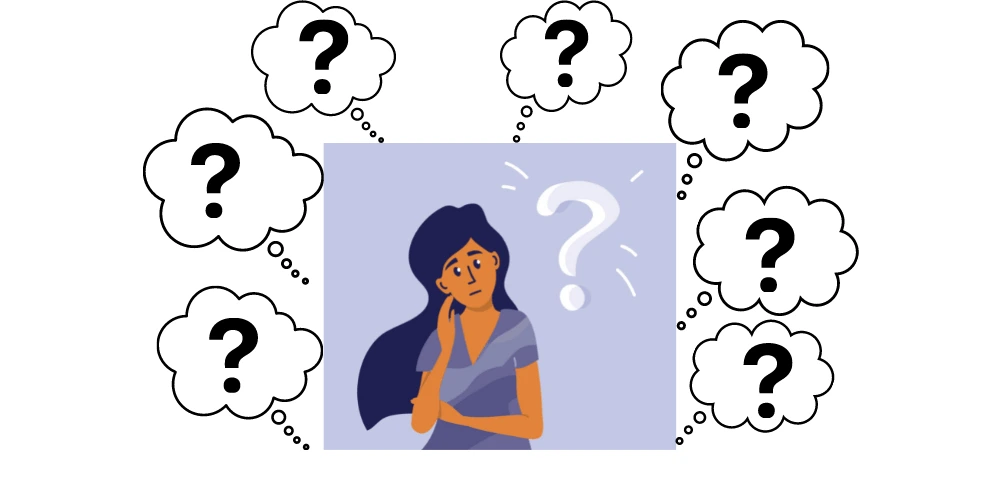
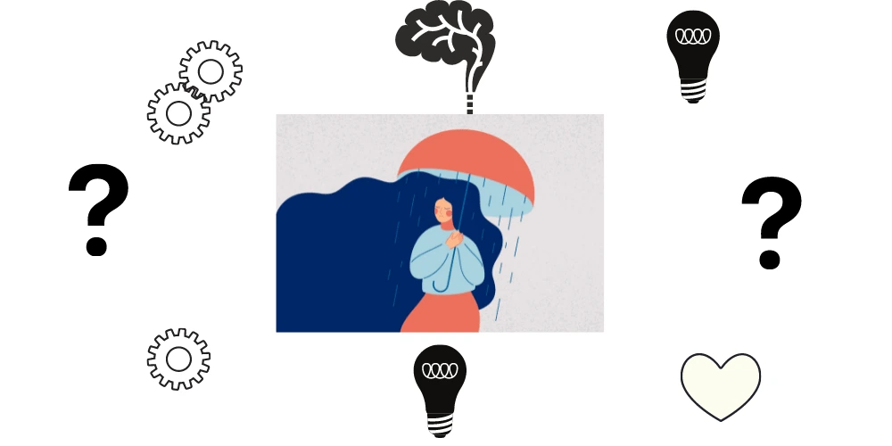

The inner critic is an inner voice that judges condemn, or degrades a person whether or not self-criticism is objectively justified. A highly active inner critic can take charge of one’s emotional well being and dignity. Educating yourself on how to quieten your inner critic might help you with strengthening the sustainer inside yourself.
We all have two different voices inside ourselves: one that is bringing up, and one that is censorious; one that lifts up, and one that drags us down. Both of these voices have a role to play in ourselves. Our inner sustainer brings self-compassion and inspiration, while the inner critic criticizes where you’ve gone wrong and what you need to do to set things right. But for most people, the inner critic goes way zealous, throwing dart after dart of scolding, shaming, pedantic and criticism. It’s big and powerful, while the inner sustainer is small and unsuccessful, wearing down your mood, self-worth and flexibility. Happily, there are good ways to reboot this balance. Read on our guide on how to quieten your inner critic.

What is Self Critical Thinking? What are Self Critical Thoughts?
Self-criticism is generally experienced as negative internal thoughts about one’s self or, more exactly, about one’s behaviours or qualities. When self-critical thoughts apply widely rather than focus on a specific behaviour, they may be more likely to affect well-being negatively. Educating yourself on self-critical thinking might help you on your journey on how to quieten your inner critic.
A person who is self-critical tends to estimates themselves and their actions very strictly, focusing on their weaknesses, shortcomings, and faults. More of a personality attribute, so some people are more arrogant than others. But if you think about it, to some extent we’re all our own worse critics. We’re so used to being inside our own heads, that we may not even realize how self-critical we are. Always try paying attention to the kinds of thoughts you have. Then you may find you are harder on yourself than you think.
Why are we self-critical?Adaptive purpose of observing our own behaviour and protecting us from psychological and physical threats.
Consequences of Self Criticism and Self Critical Thoughts
Self-criticism is sometimes positive, allowing us to encourage personal growth:
- We are able to acknowledge our faults and failures and learn from them
- Capability to prepare more humility
- We can overcome or change unwanted routines or weaknesses
However, most of the time self-criticism is damaging:
- It can prevent us from taking positive risks, being expressed about our opinions, and believing in ourselves
- We blame ourselves for every negative situation even when it might be out of our limits
- Always compare ourselves to others, which normally makes us feel worse about ourselves
- We are never satisfied with our achievements and have incredibly high standards
- Have a negative influence on mental wellbeing: Anxiety, eating disorders, social anxiety and etc
- Activates negative feelings: Sadness, anger, guilt, disappointment, shame, worthlessness, hopelessness
How to Quieten Your Inner Critic – Self Critical Thoughts to Inner Peace
Many of us may see self-compassion as related to mindfulness or gratitude. A worthy goal that is hard to turn into constant practice. But, it is possible to change our inner address, with benefits for not only our single happiness but perhaps that of society.
If you tend to be unduly critical of yourself, you’re not alone. Most people experience self-doubt and harsh self-reflection. Fortunately, however, you don’t have to be a sufferer of your own verbal abuse. Instead, take steps to enterprising address your negative thoughts and develop a more productive dialogue with yourself. Here are 11 proven ways on how to quieten your inner critic:
Observe how self-critical thoughts operates inside you
Notice any discharge or minimization of your pain, your needs and your rights. Watch how little thoughts foreground your accomplishments:
“Oh, anyone could have done that . . . but it wasn’t perfect . . . what about the other times when you messed up?”
Observe any tedious uncertainty or discouragement of your hopes and dreams.
Once you’ve recognized you don’t have evidence to support your self-critical thought, try returning it with a more realistic one that is focused less on condemnation and more on improvement. For example, “I didn’t do as well as I thought, but a B is still a reasonable mark. I still have many chances to do well in this class.”
When the inner critic starts striking away, know that your inner sustainer is a refuge and an ally
Foster the Flows of Compassion
Compassion has as much to do with our relationships with other people as much as with ourselves. Encouraging connection and ways we can care for others adjust our tricky brains to draw meaning from these relationships, instead of the self. When we feel supported by others, and safe, we feel better able to expand that to others.
The goal is to create a compassionate mindset where we not only feel compassion for ourselves and others but are open to getting it too. Self-compassion is really acknowledging what it is to be human: what our basic needs are, which is a sense of accordance, and what moves us away from that.”
Fight the Tough Self Critical Thoughts
Some self-critical thoughts are harder to control than others. For example, “I am ugly.” “I’m not good enough for something.” “I am a horrible person.” “I will forever be alone.” “I am a failure in life.” For these kinds of thoughts, it may be helpful to think about whether they set out a real purpose for you. Do they help you achieve your goals, or do they make you feel really bad about yourself?
Stop Comparing Yourself to Others
In today’s immensely competitive culture, it’s so easy for us to dive into the trap of comparing ourselves to others And when our mind plays tricks on us, making us feel like we don’t calculate, our harsh self-critic sinks us deeper into the pit of servitude and negative self-image.
Try to stop looking outward and always start turning inward instead
Every time you emit a stare and point a finger toward someone else, there are three fingers pointing back at you. That’s your body literally reminding you to reorient your sight back inward. Never forget that you are whole, full, you are worthy and you are capable. If only you learned that the only person you should compare yourself to is the previous you, then you’d recognize the power that is already endowed within you.
Comparison is the instigator:It’s the match that sparks the fire upon which your inner critic flourishes. Be cautious of it. Don’t try to breathe air into it. Shift your eye inward instead – that’s how you domestic it.
Meditate to Become More Mindful – Combat Self Critical Thoughts
Meditation will always help you in making the unconscious conscious. Meditation will help you on how to quieten your inner critic. It’ll help you raise your recognition of your inner voice so you can shine a light on it and make a change. That will help you become more mindful. And mindfulness is simply the ability to recognize thoughts before engaging with them.
When you recognize that you are not just your thoughts, you are just the observer of your thoughts—you automatically begin to change the way you think. You sensibly begin to choose which thoughts you want to give your attention to.
Practising mindfulness allows you to accept self-critical thoughts as they appear without criticizing, and then let go of those negative thoughts. In practising mindfulness, you will obviously learn to focus on the positive sides of yourself. Mindfulness also helps us to recognize that we are all humans who are sometimes self-critical, which makes us feel less alone.
Stop Ruminating
When you make a mistake or you’ve had a bad day, you may be convinced to re-play the events over and over inside your head. But, often reminding yourself of that shaming thing you did, or that doubtful thing you said, will only make you feel worse and it won’t solve any problem. It won’t help you on how to quieten your inner critic
When you find yourself considering and not actively solving the problem – don’t waste your time telling yourself, “Don’t think about it.” The more you try to neglect or avoid thinking about something, the more you’re likely to focus on it. Instead, try to distract yourself with an activity – like going for a walk, organizing your office desk, or talking about a completely different subject with someone – and stop the critical thoughts before they coil out of control.
Quieten your Tone to Quieten your Inner Critic
It is not just what your inner oration says – how it says it matters, too. Speaking to yourself with kindness and love can “feel like a verbal hug” by activating the physiological memory of feeling safe. Controlling an open, upright position and friendly facial expression can similarly inspire your mind, even if it doesn’t reflect how you feel.
Embrace the Practice on How to Quieten your Inner Critic
Learning to be compassionate takes daily authority, just like physical fitness. “If you want to feel the benefits … you must put the work in.” But, the most difficult part is allowing yourself permission to do it and accepting that you deserve to be at peace with yourself. Practice yourself gradually to quieten your inner critic.
Making that commitment traces the start of a “lifelong journey”. The longest relationship someone will ever have is with themselves – “so would you like to take your self-critic with you or your caring friend?”
Examine the Evidence on How to Quieten your Inner Critic
Learn to recognize when your critical thoughts are really negative. If you think, “I’m never going to be able to quit this job and run my own business,” examine the evidence that supports and refutes this negative thought. It’s helpful to write it down always. Take a paper and draw a line down the middle of the paper. On one side, list all the proofs that support your thoughts. On another side, write down all the proofs to the opposing. Looking at evidence on both sides of the argument can help you look at the situation more sensibly and less emotionally.
Argue Against your Self Critical Thoughts
Write down one of some normal lines like “You always fail.” And then write down three or more believable refutations. Imagine members of your family or your friends standing up for you, and talking back to the critic. Combine with them, not with it. Always talk to yourself in useful ways. Such as:
“This criticism has a grain of truth in it, but everything else is exaggerated or not true” or “This is not helping me or my thoughts and I don’t have to listen to it.”
You might also try concerning the inner critic as something that lacks reliability. Imagine it as an amusing character, like a silly cartoon character. Place it “over there” in your mind, outside the fundamental of your being — like that annoying person in a meeting who is always critical but whom everybody overlooks after a while. Remind yourself daily that you are on your way to know how to quieten your inner critic.

Start a Daily Self-gratitude Journaling Habit
Wear gratitude like a cloak and it will feed every corner of your life –Rumi, Persian Poet ( 13th Century )
This saying still holds true today
Every day writes down one important thing about yourself that you’re grateful for. You’re simply taking the time to acknowledge the success that’s happening in your life thanks to your continued effort and hard work. This positive self-talk can be considered as an addition to the practice of self-compassion. If you always compliment other people, don’t you deserve to compliment yourself?
What Matters to You? Struggling with your Inner Critic
Being hard on yourself and beating yourself up isn’t really helpful. In fact, it might be one of the possible reasons why you’re stuck where you are today. You can silence your inner critic and weak its power over you by becoming more mindful, imagining a silly character dubbing it, comparing yourself to no one but you, and starting a self-gratitude journal. When you learn how to limit self-criticism, you automatically balance its negative impact on you. This then allows you to break free from your boundaries, achieve your highest potential, and find more satisfaction in your life.
We are Here to Help You – Sy Goodbye to Self Critical Thoughts
We are here to help you to overcome self-criticism and give you more tips on how to quieten your inner critic
- If you are someone who suffers from self-criticism, you may have the need to address the reasons with a psychologist or psychiatrist
- There are many options to receive help and our friendly team is willing to offer you help if needed
- So please don’t be afraid to seek help, and take advantage of the assets available to you